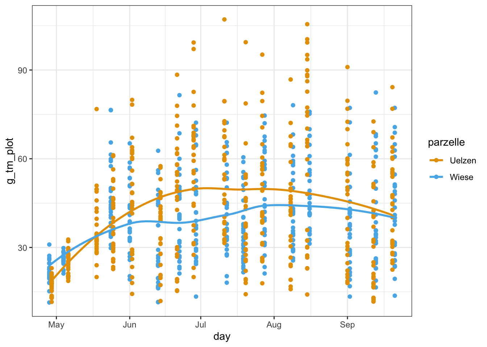
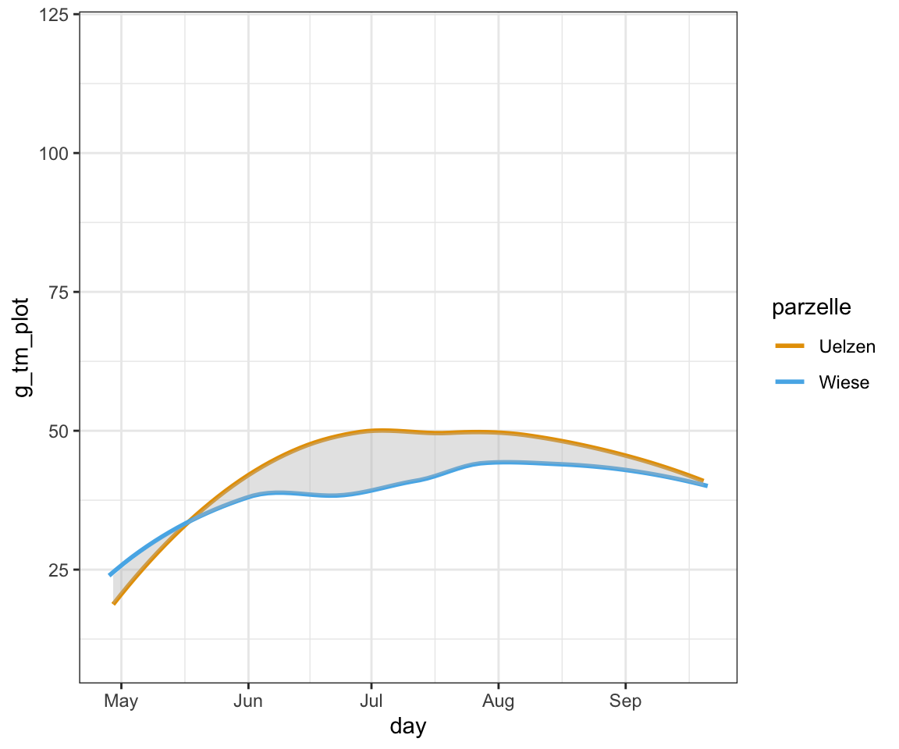
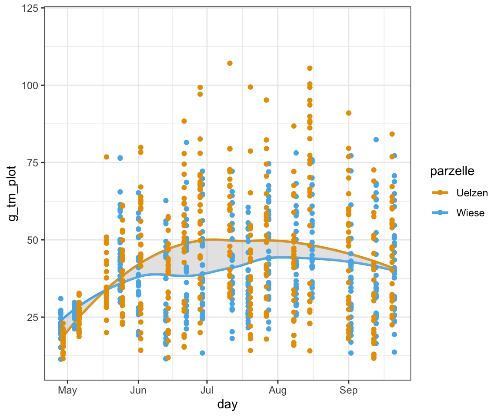
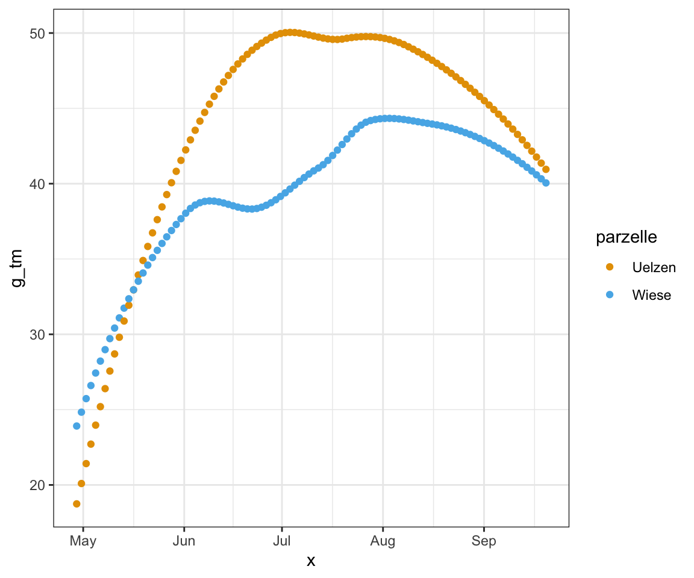
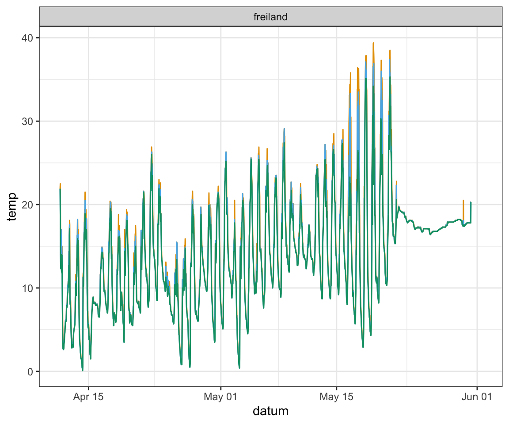
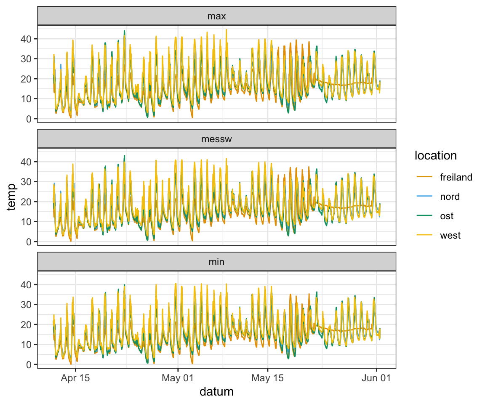
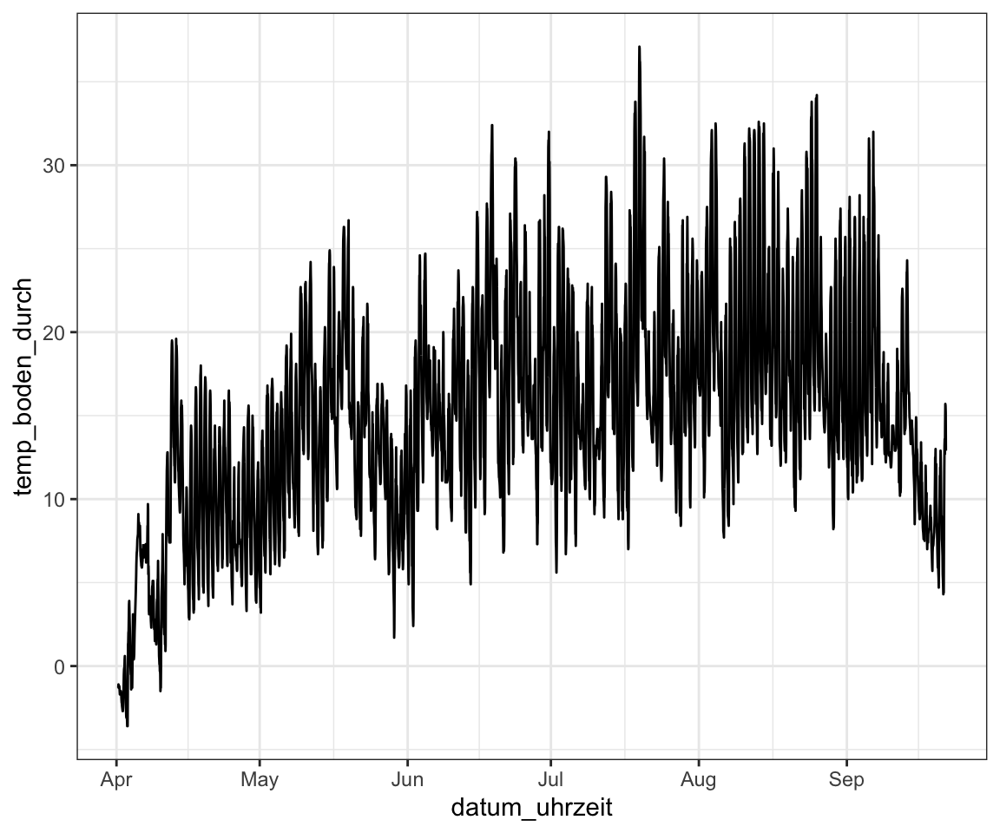

pacman::p_load(tidyverse, magrittr, janitor, see,
lubridate, conflicted)
conflicts_prefer(dplyr::filter)59 Zeitreihen (eng. time series)
Letzte Änderung am 03. October 2023 um 16:56:10
“Die Vergangenheit ist geschrieben, aber die Zukunft ist noch nicht in Stein gemeißelt” — Jean-Luc Picard, Star Trek: The Next Generation

In diesem Kapitel wollen wir uns mit Zeitreihen (eng. time series) beschäftigen. Was ja auch irgendwie zu erwarten war. Wir haben ganz einfach auf der x-Achse einer potenziellen Visualisierung die Zeit dargestellt. Wir wollen dann analysieren, ob es über den zeitlichen Verlauf einen Trend gibt oder wir ein gutes Modell für den Verlauf der Beobachtungen anpassen können. Dabei haben wir dann aber meistens nicht einen super simplen Verlauf, sondern Spitzen oder Täler in den Daten, so dass wir hier die Daten entsprechend glätten (eng. to smooth) müssen.
Wenn du noch mehr lesen willst, dann kann ich dir folgende Literatur empfehlen. Robert u. a. (2006) liefert eine gute Übersicht über die Anwendung in R, ist aber schon etwas älter. Das Gleiche gilt dann auch für das Buch von Chan und Cryer (2008) und Cowpertwait und Metcalfe (2009). Dennoch bilden alle drei Bücher die Grundlagen der Analysen von zeitreihen super ab. Für eine Abschlussarbeit sollten die Quellen also allemal reichen.
59.1 Genutzte R Pakete
Wir wollen folgende R Pakete in diesem Kapitel nutzen.
Am Ende des Kapitels findest du nochmal den gesamten R Code in einem Rutsch zum selber durchführen oder aber kopieren.
59.2 Daten
In diesem Kapitel nutzen wir CSH-Datei-Erweiterung ist ein Datenformat als Photoshop-Datei
csh_tbl <- read_excel("data/csh_data.xlsx") %>%
clean_names() %>%
mutate_if(is.numeric, round, 2)926
| parzelle | day | g_tm_plot | kg_tm_ha | netto_csh_cm | tm_gehlt |
|---|---|---|---|---|---|
| Wiese | 428 | 15.2 | 1148.47 | 7.8 | 0.22 |
| Wiese | 428 | 11.4 | 813.57 | 8 | 0.21 |
| Wiese | 428 | 24.7 | 1771.79 | 9.3 | 0.21 |
| Wiese | 428 | 20.9 | 1520.52 | 8 | 0.23 |
| … | … | … | … | … | … |
| Uelzen | 920 | 42.7 | 3104.49 | 3.6 | 0.2 |
| Uelzen | 920 | 31.9 | 2455.84 | 1.8 | 0.26 |
| Uelzen | 920 | 47 | 3396.17 | 3.4 | 0.24 |
| Uelzen | 920 | 30.2 | 2201.32 | 2.5 | 0.27 |
Nächster Datensatz
salad_tbl <- read_excel("data/temperatur_salad.xlsx") %>%
clean_names() %>%
mutate_if(is.numeric, round, 2)2447
| datum | uhrzeit | nord_messw | nord_min | nord_max | west_messw | west_min | west_max | ost_messw | ost_min | ost_max | freiland_messw | freiland_min | freiland_max |
|---|---|---|---|---|---|---|---|---|---|---|---|---|---|
| 2023-04-11 | 1899-12-31 13:30:00 | 22 | 22 | 22 | 21.9 | 21.9 | 21.9 | 21.9 | 21.9 | 21.9 | 21.9 | 21.9 | 21.9 |
| 2023-04-11 | 1899-12-31 14:00:00 | 19.5 | 19.5 | 22.6 | 19.5 | 19.5 | 22.8 | 19.3 | 19.3 | 22.6 | 18.8 | 18.8 | 22.5 |
| 2023-04-11 | 1899-12-31 14:30:00 | 23.4 | 19.5 | 25.8 | 28.5 | 19.5 | 28.5 | 20.7 | 19.3 | 20.7 | 14.6 | 13.8 | 18.8 |
| 2023-04-11 | 1899-12-31 15:00:00 | 19.2 | 18.3 | 28.1 | 24.8 | 24.8 | 32.2 | 19.6 | 19.6 | 23.2 | 13.2 | 13.2 | 15.6 |
| … | … | … | … | … | … | … | … | … | … | … | … | … | … |
| 2023-06-01 | 1899-12-31 11:00:00 | 12.9 | 12.4 | 12.9 | 13 | 13 | 13 | 13.1 | 13.1 | 13.1 | NA | NA | NA |
| 2023-06-01 | 1899-12-31 11:30:00 | 16.5 | 12.9 | 16.5 | 16.4 | 13 | 16.4 | 16.7 | 13.1 | 16.7 | NA | NA | NA |
| 2023-06-01 | 1899-12-31 12:00:00 | 18.2 | 16.5 | 18.2 | 18 | 16.4 | 18 | 18.3 | 16.7 | 18.3 | NA | NA | NA |
| 2023-06-01 | 1899-12-31 12:30:00 | 18.7 | 18.2 | 18.7 | 18.6 | 18 | 18.6 | 19.1 | 18.3 | 19.1 | NA | NA | NA |
Nächster Datensatz
station_tbl <- read_excel("data/Wetterstation_Hagebüchen.xlsx") %>%
clean_names() %>%
mutate_if(is.numeric, round, 2)4163
| datum_uhrzeit | temp_boden_durch | temp_boden_max | temp_boden_min | regen_mm | bodenfeuchte_perc | solar_mv |
|---|---|---|---|---|---|---|
| 2022-09-21 18:00:00 | 12.9 | 14.3 | 11.5 | 0 | 10.61 | 6978 |
| 2022-09-21 17:00:00 | 15.2 | 15.8 | 14.7 | 0 | 10.64 | 10223 |
| 2022-09-21 16:00:00 | 15.6 | 16.8 | 14.7 | 0 | 10.69 | 10343 |
| 2022-09-21 15:00:00 | 15.7 | 17.2 | 13.4 | 0 | 10.76 | 10348 |
| … | … | … | … | … | … | … |
| 2022-04-01 11:00:00 | -1.3 | -1 | -1.5 | 0 | 15.95 | 9854 |
| 2022-04-01 10:00:00 | -1.1 | -0.8 | -1.5 | 0 | 16.04 | 9892 |
| 2022-04-01 09:00:00 | -1.3 | -1 | -1.5 | 0 | 16.13 | 6983 |
| 2022-04-01 08:00:00 | -1.3 | -1.1 | -1.5 | 0 | 16.24 | 4083 |
59.3 Das Datumsformat
Wichtig ist, dass wir das richtige Datumsformat haben. Siehe dazu auch das Kapitel Zeit und Datum
59.3.1 Die CSH-Daten
csh_tbl <- csh_tbl %>%
mutate(day = as.Date(str_pad(day, 4, pad = "0", side = "left"), format = "%m%d"))csh_tbl %>%
head(4)# A tibble: 4 × 6
parzelle day g_tm_plot kg_tm_ha netto_csh_cm tm_gehlt
<chr> <date> <dbl> <dbl> <dbl> <dbl>
1 Wiese 2023-04-28 15.2 1148. 7.8 0.22
2 Wiese 2023-04-28 11.4 814. 8 0.21
3 Wiese 2023-04-28 24.7 1772. 9.3 0.21
4 Wiese 2023-04-28 20.9 1521. 8 0.2359.3.2 Die Salatdaten
salad_long_tbl <- salad_tbl %>%
mutate(uhrzeit = format(uhrzeit, format = "%H:%M:%S"),
datum = format(datum, format = "%Y-%m-%d"),
datum = ymd(datum) + hms(uhrzeit)) %>%
select(-uhrzeit) %>%
pivot_longer(nord_messw:last_col(),
names_sep = "_",
names_to = c("location", "type"),
values_to = "temp") 59.3.3 Die Wetterstationsdaten
station_tbl <- station_tbl %>%
mutate(datum_uhrzeit = as_datetime(datum_uhrzeit))59.4 Visualisierung
59.4.1 Die CSH Daten
csh_tbl %>%
ggplot(aes(day, g_tm_plot, color = parzelle)) +
theme_bw() +
geom_point() +
stat_smooth(se = FALSE) +
scale_color_okabeito() 
p_csh <- csh_tbl %>%
ggplot() +
theme_bw() +
scale_color_okabeito() +
stat_smooth(aes(day, g_tm_plot, color = parzelle), se = FALSE, n = 100)- 1
-
Setze
n = 1000um wirklich eine gute Abdeckung später für die Berechung der Fläche zu haben.
p_csh_str <- ggplot_build(p_csh)ribbon_tbl <- p_csh_str %>%
pluck("data", 1) %>%
as_tibble() %>%
select(x, y, group) %>%
mutate(group = factor(group, labels = c("Uelzen", "Wiese"))) %>%
split(.$group) %>%
bind_cols() %>%
clean_names() %>%
select(x = x_1, Uelzen = y_2, Wiese = y_5) %>%
mutate(x = as_date(x, origin = lubridate::origin))- 1
-
Die
y_2Werte sind die Werte aus Uelzen und diey_5Werte von der Wiese. - 2
-
Die
x-Werte sind noch das Datum in numerischer Form ausggplot(). Hier wieder zurück insyyyy-mm-ddFormat.
p_csh +
geom_ribbon(data = ribbon_tbl, aes(x = x, ymin = Wiese, ymax = Uelzen),
fill = "grey", alpha = 0.4) +
ylim(10, 120)
p_csh +
geom_ribbon(data = ribbon_tbl, aes(x = x, ymin = Wiese, ymax = Uelzen),
fill = "grey", alpha = 0.4) +
geom_point(aes(day, g_tm_plot, color = parzelle)) +
ylim(10, 120)
animals_df
std_creature_dfribbon_tbl %>%
mutate(diff = Uelzen - Wiese) %>%
pull(diff) %>%
sum()[1] 441.0318Wenn wir oben n = 1000 in der Funktion stat_smooth() gesetzt hätten, dann hätten wir hier fast eine Linie aus Punkten ohne Lücken.
ribbon_tbl %>%
pivot_longer(cols = Uelzen:Wiese,
values_to = "g_tm",
names_to = "parzelle") %>%
ggplot(aes(x, g_tm, color = parzelle)) +
theme_bw() +
scale_color_okabeito() +
geom_point()
59.4.2 Salat Daten
salad_long_tbl %>%
ggplot(aes(datum, temp, color = type)) +
theme_bw() +
scale_color_okabeito() +
geom_line() +
facet_wrap(~ location)
salad_long_tbl %>%
ggplot(aes(datum, temp, color = location)) +
theme_bw() +
scale_color_okabeito() +
geom_line() +
facet_wrap(~ type, ncol = 1) 
animals_df
std_creature_df59.4.3 Die Wetterstationsdaten
station_tbl %>%
ggplot(aes(datum_uhrzeit, temp_boden_durch)) +
theme_bw() +
scale_color_okabeito() +
geom_line() 
59.5 Modeltime tutorial
pacman::p_load(xgboost, tidymodels, modeltime, timetk)
# This toggles plots from plotly (interactive) to ggplot (static)
interactive <- FALSE
# Data
m750 <- m4_monthly %>% filter(id == "M750")
m750 %>%
plot_time_series(date, value, .interactive = TRUE)59.6 Links
Welcome to a Little Book of R for Time Series!
Analysing Time Series Data – Modelling, Forecasting And Data Formatting In R
Referenzen
Chan K-S, Cryer JD. 2008. Time series analysis with applications in R. Springer.
Cowpertwait PS, Metcalfe AV. 2009. Introductory time series with R. Springer Science & Business Media.
Robert H, others. 2006. Time Series Analysis and Its Applications With R Examples Second Edition.